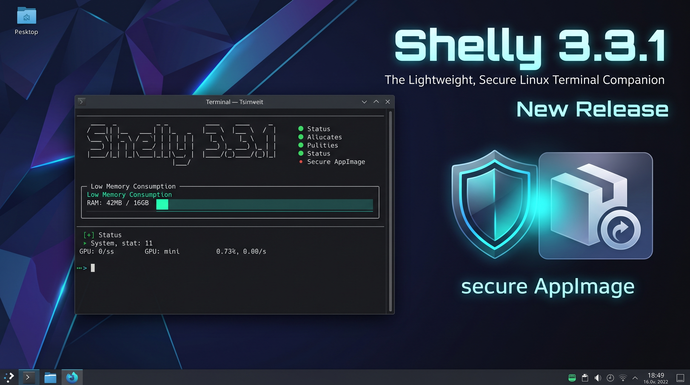

Shelly 3.3.1 a fost lansat: Gestionare mai sigură a actualizărilor AppImage, remediere temă pe KDE Plasma și consum redus de memorie în TUI

Managerul grafic de pachete Shelly — dedicat distribuției Arch Linux și derivatelor sale — a primit actualizarea de mentenanță 3.3.1. Noua versiune perfecționează fluxul de actualizare și eliminare a pachetelor AppImage, rezolvă problemele de afișare GTK sub KDE Plasma, extinde comanda de reparare a bazei de date și reduce amprenta de memorie a interfeței din terminal (TUI).
1. Actualizări și mentenanță AppImage cu protecție la erori
Verificare proaspătă la „Upgrade All”: Apăsarea butonului Upgrade All din pagina AppImage declanșează acum o verificare nouă în timp real prin utilitarul CLI al Shelly, în loc să se bazeze pe rezultatele unei scanări mai vechi. Utilizatorii pot controla acest comportament prin noua opțiune „Always Recheck AppImage Updates on Upgrade All” (când este dezactivată, se actualizează doar aplicațiile deja detectate).
Păstrarea versiunii în numele fișierului și Rollback: Aplicațiile actualizate își păstrează acum numărul versiunii în formatul
Name-Version.AppImagepentru o identificare ușoară. Shelly actualizează automat intrările desktop (.desktop) și pictogramele asociate, șterge fișierul vechi și oferă protecție de tip rollback în cazul în care actualizarea eșuează.Dezinstalare transparentă: Dialogul de eliminare a unui pachet AppImage afișează acum explicit dacă vor fi șterse și fișierele de configurare ale aplicației, preluând implicit preferința globală a utilizatorului.
2. Integrare KDE Plasma și repararea bazei de date (--repair-db)
Remediere temă GTK pe KDE Plasma: Versiunea 3.3.1 corectează o problemă de stilizare GTK care afecta tema integrată Pearl, vizibilă în special în mediul desktop KDE Plasma.
Deblocarea cache-ului utilizatorului (
shelly utility --repair-db): Comanda de reparare identifică și elimină acum nu doar blocajele (locks) de la nivel de sistem ale bazei de date de pachete, ci și blocajele vechi din cache-ul de verificare a actualizărilor al utilizatorului. Utilitarul raportează căile inspectate și solicită privilegii elevate (sudo/polkit) doar dacă este necesară intervenția asupra bazei de date de sistem.
3. Optimizări de memorie în TUI și împachetare PKGBUILD
Consum redus de RAM în interfața terminal: Interfața textuală (TUI) a fost optimizată prin eliminarea câmpurilor de date neutilizate și simplificarea procesării informațiilor despre pachete, scăzând semnificativ vârful de consum de memorie la navigarea prin colecții mari de pachete.
Pachet separat
shelly-tuiîn AUR/PKGBUILD: Interfața TUI este inclusă oficial în rețetele de împachetarePKGBUILDale proiectului. Utilizatorii o pot instala separat prin pachetulshelly-tui(care depinde deshelly-cli), în timp ce pachetul completshellyle include pe ambele.